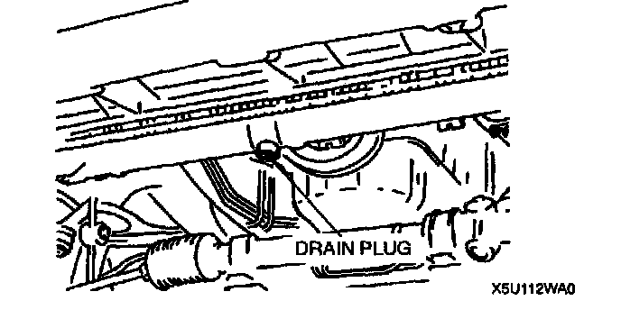
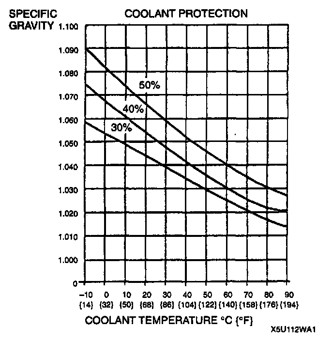
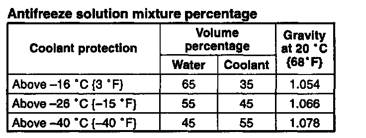

Coolant: Service and Repair
ENGINE COOLANT REPLACEMENT1. Drain the coolant in the coolant reservoir.

2. Remove the radiator cap and the radiator drain plug. Service Precautions
3. Drain the coolant into a container.
4. Flush the cooling system with water until all traces of color are gone.
5. Leave the system until drain completely.
6. Tighten the radiator drain plug.
Tightening torque: 0.7 - 1.1 Nm (7 - 12 kgf.cm, 7 - 10 inch lbs.)
Caution:
^ The engine has aluminum parts that can be damaged by alcohol or methanol antifreeze. Do not use alcohol or methanol in the cooling system. Use only ethylene-glycol-based coolant.
^ Use only soft (demineralized) water in the coolant mixture. Water that contains minerals will cut down on the coolant's effectiveness.


7. Referring to the graph and chart, select proper gravity of the coolant. Slowly pour the coolant into the radiator up to the coolant filler port.
Filling pace: 1.0L (1.1 US qt., 0.9 Imp qt.)/min. [max.]
8. Fill the coolant into the reservoir up to the FULL mark on the coolant reservoir.
9. Fully install the radiator cap.
10. Start the engine and warms up. If the coolant temperature becomes too high, stop the engine to prevent it from overheating.
11. After engine warms up, run it at approx. 2,500 rpm for 5 minutes.
12. Increase the engine speed to approx. 3,000 rpm for 5 seconds, then return to idle. Repeat several times.
13. Stop the engine and wait until it is cool.
14. Inspect the coolant level. If it is low, repeat steps 7 - 12.
15. Inspect for the coolant leakage.